Introducere
 Selectorul de tab-uri
Selectorul de tab-uri
 Pentru a adăuga tabulaturi:
Pentru a adăuga tabulaturi:
Indentarea textului adaugă structură documentului, permițându-vă să separați informațiile. Indiferent dacă doriți să mutați un singur rând sau un paragraf întreg, puteți utiliza selectorul de tabulatori și rigla orizontală pentru a seta file și indentări.
Indentarea textuluiÎn multe tipuri de documente, este posibil să doriți să indentați doar primul rând al fiecărui paragraf. Acest lucru ajută la separarea vizuală a paragrafelor unul de celălalt.
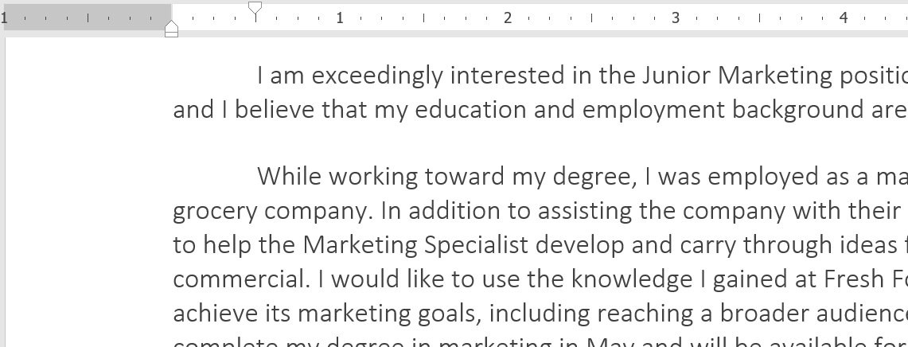
De asemenea, este posibil să indentați fiecare linie, cu excepția primei rânduri, care este cunoscută sub numele de indentare suspendată.
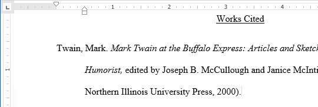
Pentru a indenta folosind tasta Tab:O modalitate rapidă de indentare este să utilizați tasta Tab. Aceasta va crea o indentație pe prima linie de 1/2 inch.
- Plasați punctul de inserare chiar la începutul paragrafului pe care doriți să îl indentați.
- Apăsați tasta Tab. Pe riglă, ar trebui să vedeți marcatorul de indentare de la prima linie mișcându-se la dreapta cu 1/2 inch.
- Primul rând al paragrafului va fi indentat.
- Dacă nu puteți vedea rigla, selectați fila Vizualizare, apoi faceți clic pe caseta de selectare de lângă rigla.
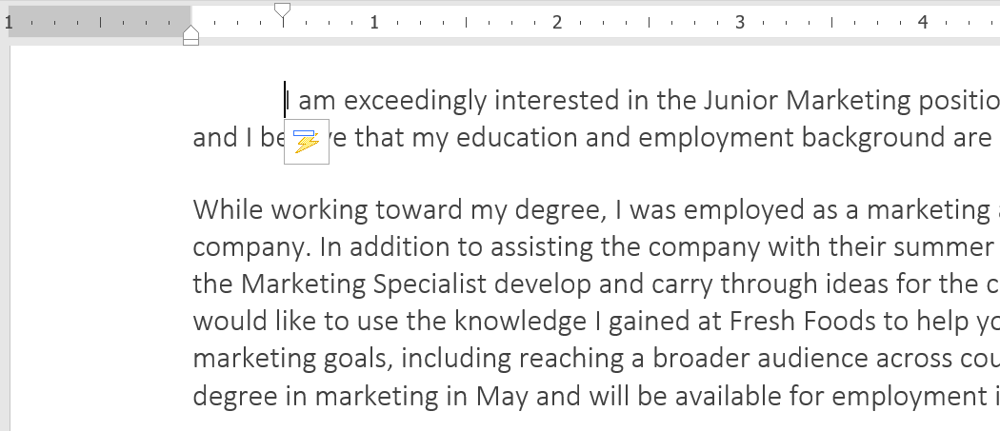
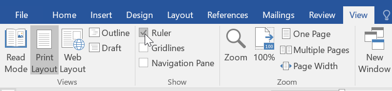
În unele cazuri, este posibil să doriți să aveți mai mult control asupra indentărilor. Word oferă marcatori de indentare care vă permit să indentați paragrafe în locația dorită.
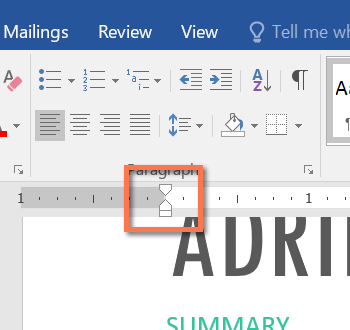
Marcatorii de indentare sunt localizați în stânga riglei orizontale și oferă mai multe opțiuni de indentare:
- Marcatorul de indentare pe prima linie ajustează indentarea pe prima linie
- Marcatorul de indentare agățat ajustează indentația suspendată
- Marcatorul de indentare din stânga mută atât indentația de pe prima linie, cât și marcatorii de indentație suspendați în același timp (indentarea tuturor liniilor dintr-un paragraf)
- Plasați punctul de inserare oriunde în paragraful pe care doriți să îl indentați sau selectați unul sau mai multe paragrafe.
- Faceți clic și trageți marcatorul de indentare dorit. În exemplul nostru, vom face clic și vom trage marcatorul de indentare din stânga.
- Eliberați mouse-ul. Paragrafele vor fi indentate.
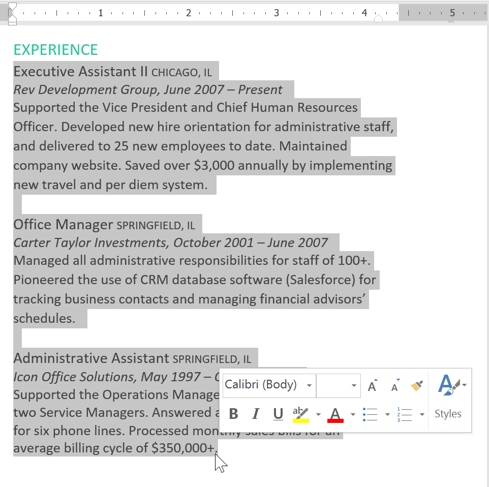
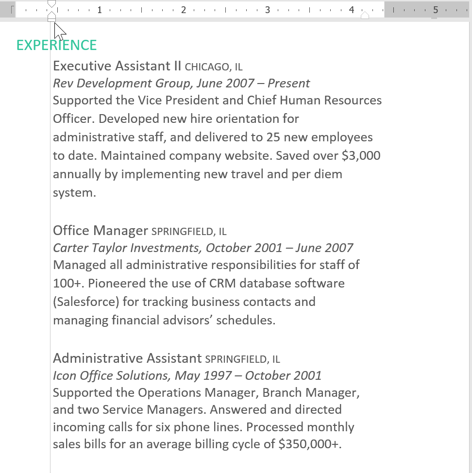
Dacă doriți să indentați mai multe rânduri de text sau toate rândurile unui paragraf, puteți utiliza comenzile Indentare. Comenzile Indent vor ajusta indentarea cu incremente de 1/2 inch.
- Selectați textul pe care doriți să îl indentați.
- În fila Acasă, faceți clic pe comanda Mărire indentare sau Reducere indentare.
- Textul va fi indentat
- Pentru a personaliza sumele de indentare, selectați fila Aspect lângă valorile dorite în casetele de sub Indentare.
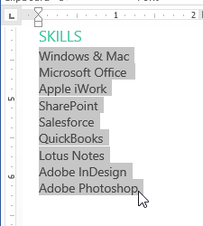
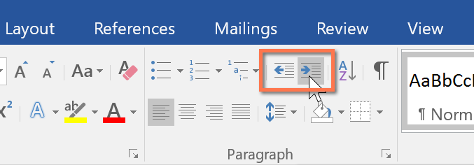

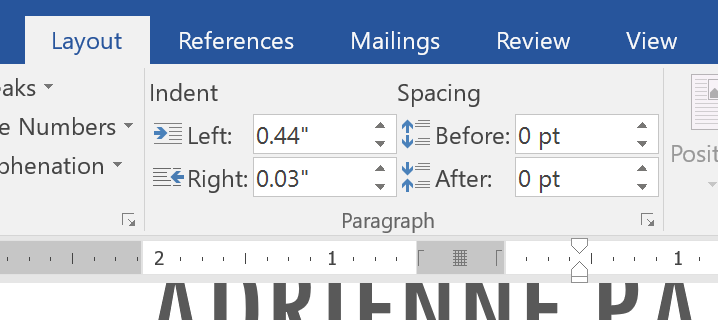
Utilizarea tab-urilor vă oferă mai mult control asupra plasării textului. În mod implicit, de fiecare dată când apăsați tasta Tab, punctul de inserare se va deplasa cu 1/2 inch la dreapta. Adăugarea punctelor de tabulație la riglă vă permite să modificați dimensiunea tab-urilot, iar Word chiar vă permite să aplicați mai mult de o tabulatură la o singură linie. De exemplu, pe un CV puteți alinia la stânga începutul unei linii și la dreapta sfârșitul liniei adăugând o filă din dreapta, așa cum se arată în imaginea de mai jos.
Selectorul de tab-uri
Selectorul de tab-uri este situat deasupra riglei verticale din stânga. Treceți cu mouse-ul peste selectorul de file pentru a vedea numele punctului de filare activ.
Pentru a adăuga tabulaturi:
- Selectați paragraful sau paragrafele la care doriți să adăugați tabulaturi. Dacă nu selectați niciun paragraf, tabulatorii se vor aplica paragrafului curent și oricăror paragrafe noi pe care le introduceți sub acesta.
- Faceți clic pe selectorul de tab-uri până când apare opritorul pe care doriți să îl utilizați. În exemplul nostru, vom selecta Tab-ul din dreapta.
- Faceți clic pe locația de pe rigla orizontală în care doriți să apară textul (este util să faceți clic pe marginea de jos a riglei). Puteți adăuga oricâte tabulaturi doriți.
- Așezați punctul de inserare în fața textului pe care doriți să îl introduceți, apoi apăsați tasta Tab. Textul va sări la următoarea oprire de tabulare. În exemplul nostru, vom muta fiecare interval de date în tabulatorul pe care l-am creat.

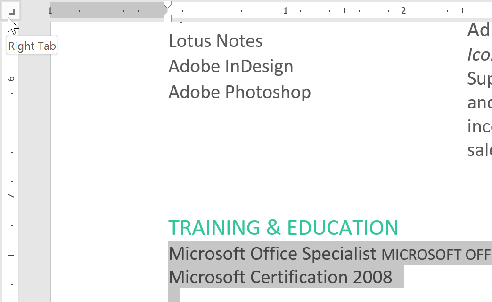


Este o idee bună să eliminați orice opritoare de tabulatură pe care nu le utilizați, astfel încât să nu vă împiedice. Pentru a elimina o tabulatură, mai întâi selectați tot textul care folosește tabularea. Apoi faceți clic și trageți-l de pe riglă.
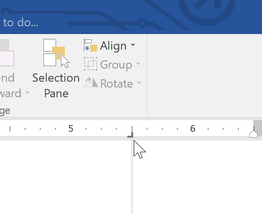